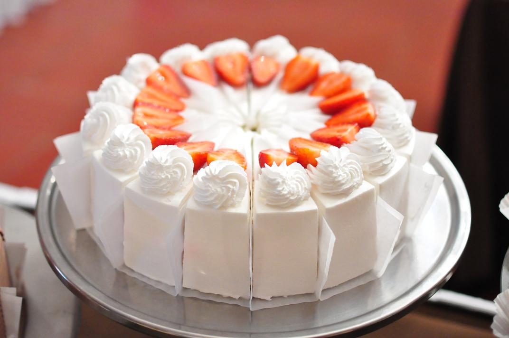

Pastel de Fresas y Crema
Publicada el 30 de enero de 2017

Ingredientes
- PAM® Baking Spray
- 1 paquete ( 15.25 onzas cada uno) de mezcla de pastel de fresa , preparados con aceite vegetal y huevos
- 1 paquete (8 onzas) de queso crema, ablandado
- 2 tazas de pudín de vainilla (3.25 onzas)
- ½ taza de azúcar impalpable
- ¼ cucharadita de vainilla
- 2 tazas de fresas frescas cortadas a la mitad
- azúcar de color rojo, opcional
Preparación
Rocíe un molde redondo de 8 pulgadas y uno cuadrado de 8 pulgadas con spray PAM para hornear. Prepare la mezcla para pastel según las instrucciones del paquete, usando aceite vegetal y huevos. Enfriar por 1 hora.
Para hacer el glaseado, combine el queso crema, el pudín, el azúcar impalpable y la vainilla en un tazón mediano. Bata con una batidora eléctrica a velocidad baja por 2-3 minutos o hasta que esté suave.